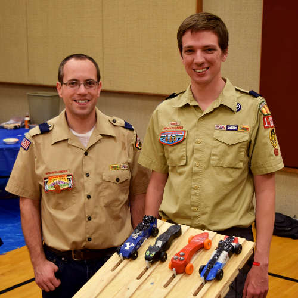

Eric Mansfield has been heavily involved with Scouting since he joined Cub Scouts at the age of eight. After earning his Eagle Scout Award and serving a mission for the Church of Jesus Christ of Latter-day Saints, Eric attended BSA National Camping School for Aquatics Instructor certification. In his spare time he volunteers as assistant aquatics director and website developer for the Hudson-Delaware LDS Regional Scout Encampment. He also currently serves as a pack committee chairman.
Eric is a father of three and is employed by Sustainable Energy Solutions as a chemical engineer. Both he and Aaron enjoy using their technical skill and know-how to teach, serve, and have fun with Scouts.
Aaron Sayre loves Scouting and the values it promotes. He earned his Arrow of Light, his Duty to God Award, and his Eagle Scout. In 1994 his Cub Scout pinewood derby car won the "awesome vehicle design" award in his pack! Now he is involved in Cub Scouts again and excited to be part of it.
Aaron loves science, engineering, and robotics. He works at Sustainable Energy Solutions. In his spare time he and his kids love adventuring, building robots, boat building, LEGOing, treehousing, and playing around.
